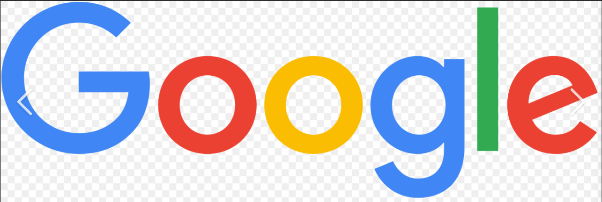

Hi! Welcome to Google
Google was founded in September 1998 by Larry Page and Sergey Brin
while they were
Ph.D. students at Stanford University in California.
Together they own about 14
percent of its shares and control 56 percent of the stockholder voting power through
supervoting stock

Link to GOOGLE
Amzing Facts about facts
1. The name 'Google' is actually derived from the mathematical term 'googol'
which is basically 1 with a 100 zeros following it
2. Co-founders Larry Page and Sergey Brin originally named Google 'Backrub'
3. As part of their green initiative, Google regularly rents goats to mow the lawns of their mountain view HQ/h3>
4. Thanks to Google Instant, you can't actually use the 'I'm Feeling Lucky' button anymore
5. Since 2010, Google has been acquiring an average of one company every week
6. Google uses a web tool called foo.bar to recruit new employees based on what they search for online